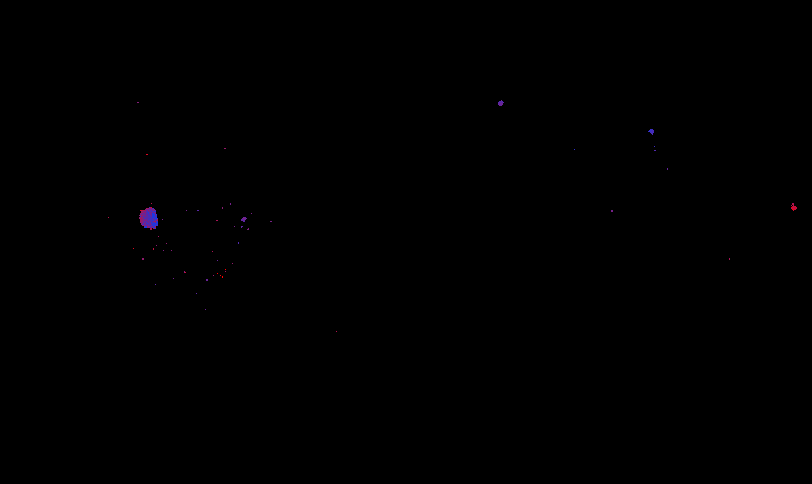
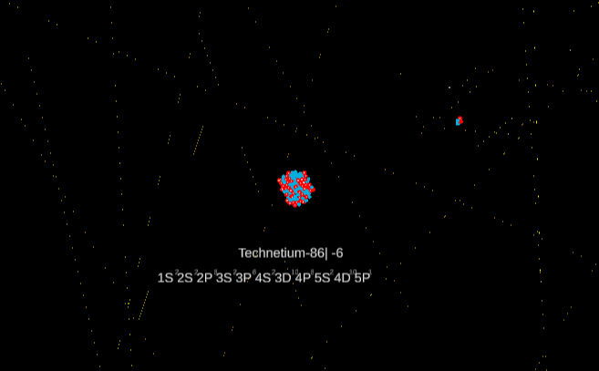
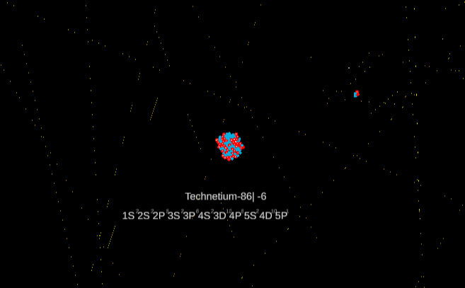
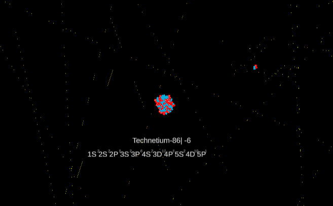

Gravity Simulator is a Newtonian gravity simulation of the interactions between hundreds of small particles. There are several options to choose from at the start of simulations that help visualize different elements of the simulation. The simulation starts with clumps of particles spawned with random velocities, and gravity takes over from there.
Evolution Simulator is a simulated petri dish in which two competing types of single celled life compete with each other for survival. Each cell is tasked with procuring food before it can replicate. Prokaryotes eat randomly spawning green plant foods, while Eukaryotes can only eat red meat food dropped when cells are killed. When a cell is replicated, there is a small chance for random stat mutations to occur.
Atom Simulator is designed to help visualize rough atomic structure and element names alongside their electron orbital notations. The simulator allows placing Protons, Neutrons, and Electrons. The simulator is not accurate as a model of anything beyond the standard electron orbital notation. It is essential just a toy to mess around with not a realistic model of quantum mechanics.
None of these simulations are particularly accurate, but they are fun to play with and have running in the background as visual games.
Simulator Games
An assortment of fun simulator games.
Gravity Simulator
Evolution Simulator
Atom Simulator

 

